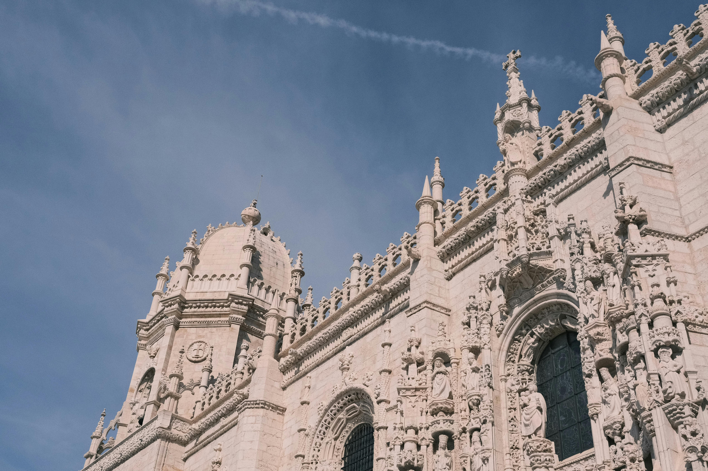

Lisbonne - Explorations Entre Terre et Mer,
Capitale Lusitanienne aux Mille Visages
Lisbonne, capitale du Portugal, est un joyau méditerranéen imprégné d'histoire et d'influence culturelle. Fondée il y a des siècles, la ville est depuis longtemps un port vital, reliant l'Europe et le monde. Au fil du temps, Lisbonne est devenue un centre culturel et artistique majeur, célèbre pour sa musique traditionnelle, le fado, et son architecture unique. En tant que siège du gouvernement portugais et plaque
tournante du commerce maritime, Lisbonne a façonné l'histoire de la région et continue d'être un foyer d'innovation et de progrès.
Elle est également le point de départ des grandes découvertes maritimes qui ont ouvert de nouvelles voies commerciales et
culturelles vers le Nouveau Monde. Lisbonne, avec sa beauté pittoresque et son dynamisme économique, incarne l'esprit
et l'héritage de la nation portugaise, tout en étant un carrefour cosmopolite où se rencontrent les cultures du monde.
Essentiel du Portugal : Top 3 des lieux
incontournables à Lisbonne
Il faudrait une éternité pour percer tous les mystères de Lisbonne, une ville si envoûtante qu'elle vous transporte dans une frénésie envoûtante à chaque pas. Notre mission est de vous accompagner à travers ses rues animées et ses joyaux cachés, vous
permettant ainsi de vous immerger complètement dans la magie de cette métropole méditerranéenne.


Lisbonne, capitale du Portugal, est une ville où l'énergie déborde à chaque coin de rue. Fondée sur les rives du fleuve Tage, elle mêle harmonieusement la vie urbaine à la nature environnante. En tant que carrefour culturel et économique, Lisbonne incarne
l'héritage riche et diversifié du Portugal. Ses quartiers animés, ses sites historiques et sa cuisine savoureuse en font
une destination incontournable pour les voyageurs en quête d'authenticité et de découvertes uniques.
Plongez au cœur de l'effervescence de Lisbonne et laissez-vous envoûter par son charme envoûtant !
Le Quartier de l'Alfama

Niché au sommet de collines escarpées, l'Alfama est le plus ancien quartier
de Lisbonne, imprégné d'histoire et de charme. Avec ses ruelles sinueuses,
ses maisons colorées et ses vues imprenables sur le fleuve Tage, c'est l'endroit
idéal pour se perdre et découvrir l'âme authentique de la ville.
Bon à savoir : Avant de vous aventurer dans le Quartier de l'Alfama, gardez à
l'esprit que ses ruelles étroites peuvent être un défi à naviguer. Prévoyez des
chaussures confortables et une carte pour profiter pleinement de cette
expérience immersive.
Le Monastère des Hiéronymites (Mosteiro dos Jerónimos)
Joyau de l'architecture manuéline, ce monastère majestueux est un témoignage
de l'âge d'or du Portugal. Déclaré site du patrimoine mondial par l'UNESCO,
il abrite les tombes des grands explorateurs portugais, ainsi que des détails
architecturaux exquis à chaque coin.
Bon à savoir :Avant de visiter le Monastère des Hiéronymites, vérifiez les horaires
d'ouverture et les éventuelles restrictions d'accès. Certains jours peuvent être plus
fréquentés que d'autres, alors planifiez votre visite en conséquence pour éviter
les files d'attente.
Le Château Saint-Georges (Castelo de São Jorge)

Surplombant fièrement la ville depuis une colline, le château Saint-Georges
offre non seulement une vue panoramique à couper le souffle sur Lisbonne,
mais aussi une plongée dans l'histoire médiévale du Portugal. Flânez dans ses
jardins paisibles et explorez ses remparts chargés d'histoire.
Bon à savoir : Avant de monter au Château Saint-Georges, assurez-vous d'avoir
de l'eau et une protection solaire, surtout par temps chaud. Les remparts
offrent peu d'ombre, mais la vue panoramique en vaut la peine.
Comment aller à Lisbonne ?

Lisbonne est facilement accessible depuis d'autres continents par voie aérienne. L'aéroport Humberto Delgado, également connu sous le nom de l'aéroport de Lisbonne-Portela, est le principal aéroport international de la ville, desservant des vols en provenance de toute l'Europe, de l'Afrique, des Amériques et d'autres régions du monde. Une fois arrivé à l'aéroport, les voyageurs peuvent utiliser les services de taxi, de navette, de métro ou de location de voitures pour rejoindre le centre-ville de Lisbonne. D’ailleurs, vous trouverez votre établissement idéal sur un comparateur d’hôtels.
Où loger à Lisbonne ?
Les nombreux de quartiers vous offrent un large choix de lieux où se loger à Lisbonne lors de votre séjour au Portugal. Pour profiter au mieux de votre séjour, l’idéal est de choisir votre logement dans les quartiers les plus authentiques que sont Baixa, Alfama, Bairro Alto, Chiado et Belém. Dormir dans l’un de ces quartiers vous permet d’être proche des sites à visiter et des transports pour vous déplacer facilement dans Lisbonne. Pour trouver un hôtel au meilleur prix à Lisbonne, vous pouvez effectuer une recherche sur ce comparateur d’hôtels. Il existe également de beaux logements sur Airbnb. Alors, vous vous demandez toujours que faire à Lisbonne ?